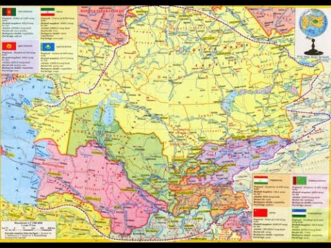

Geografiya Bu:
Geografiya yoki joʻgʻrofiya (grekcha: γεωγραφία; γη yoki γαια — „Yer“, γραφειν — „tasvirlamoq“ yoki „yozmoq“
yoxud „xaritalamoq“) — Yerning geografik qobigʻi, uning struktura va dinamikasi, alohida komponentlarini
hududlar boʻyicha oʻzaro taʼsiri va taqsimlanishini oʻrganadigan fanlar majmui. Antik dunyo gʻarb olimlari
Yer yuzasining manzarasini „geografiya“ soʻzi bilan ifodalaganlar. Geografiya terminini dastlab Eratosfen
(mil. av. 276—194-yillarda yashagan) kiritgan. Oʻrta Osiyoda 9—10-asrlardan boshlab Geografiya soʻzi
maʼnosida „surati arz“, „yetti iqlim“, „Kitob almasolik valmamolik“ („Mamlakatlar va masofalar kitobi“)
iboralari qoʻllanilgan. 19-asrda va 20-asr boshlarida oʻzbek tilida „geografiya“ arabcha talaffuz bilan
„jugʻrofiya“ shaklida yozilgan. Hozirgi davrda „Geografiya“ oʻrniga „Geografiya fanlari sistemasi“ iborasini
qoʻllash ilmiy jihatdan toʻgʻriroqdir.

Geografiya fanlari sistemasi 3 asosiy tarmoqqa boʻlinadi: a) tabiiy, yaʼni tabiiy geografik fanlar — ularga
tabiiy geografiya (umumiy yer bilimi, landshaftshunoslik va paleogeografiyani oʻz ichiga oladi),
geomorfologiya, iqlimshunoslik, quruqlik gidrologiyasi, okeanologiya, glyatsiologiya, geokriologiya,
tuproklar Geografiyasi va biogeografiya kiradi; b) ijtimoiy va iqtisodiy geografik fanlar — umumiy va
regional iqtisodiy Geografiya, xoʻjalik tarmoqlari Geografiyasi (sanoat Geografiyasi, qishloq xoʻjaligi
Geografiyasi, transport Geografiyasi va b.), aholi Geografiyasi, siyosiy Geografiya; v) haritagrafiya. Undan
tashqari Geografiyaga mamlakatshunoslik, tibbiy Geografiya, rekreatsiya va harbiy Geografiyaham kiradi.
Keyingi yillarda, koinotni oʻrganish rivojlanishi bilan selenografiya (Oy Geografiyasi), kosmos
yershunosligi kabi sohalar ham vujudga keldi.